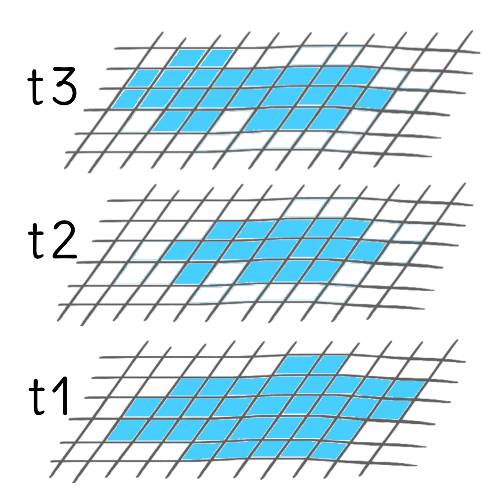
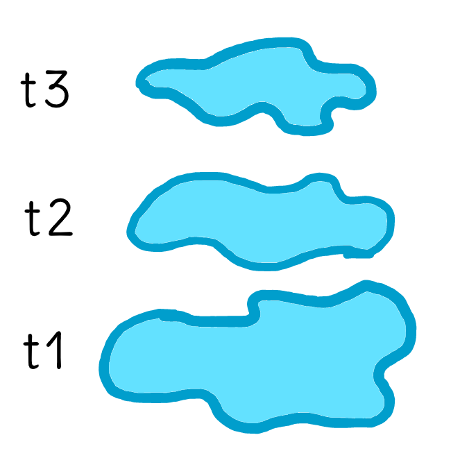
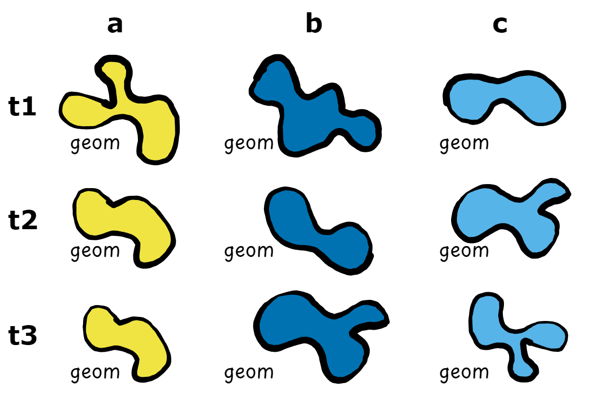
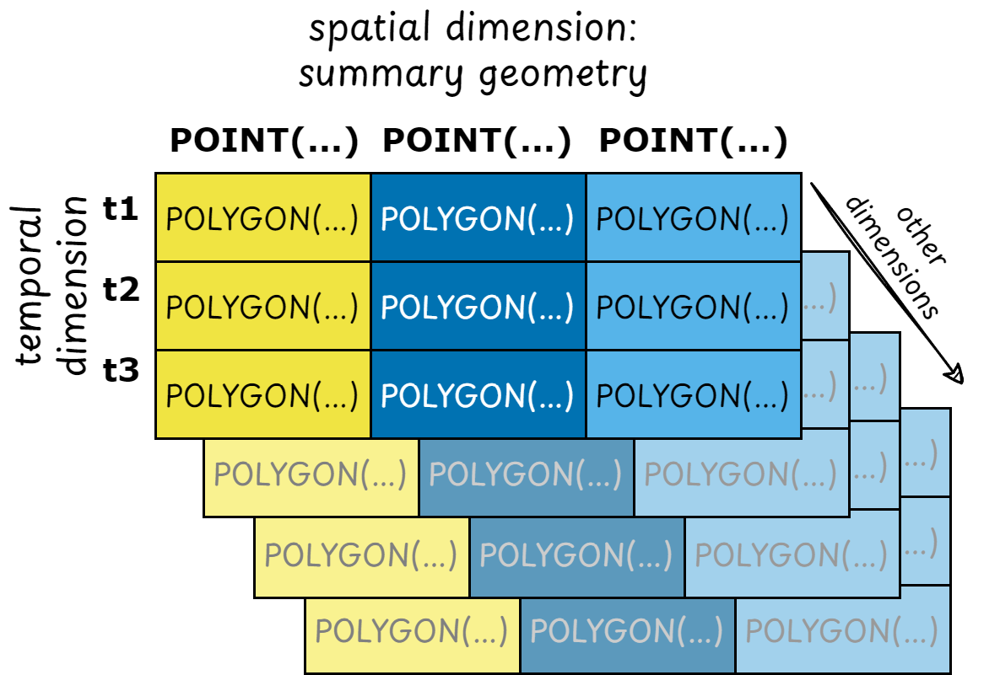
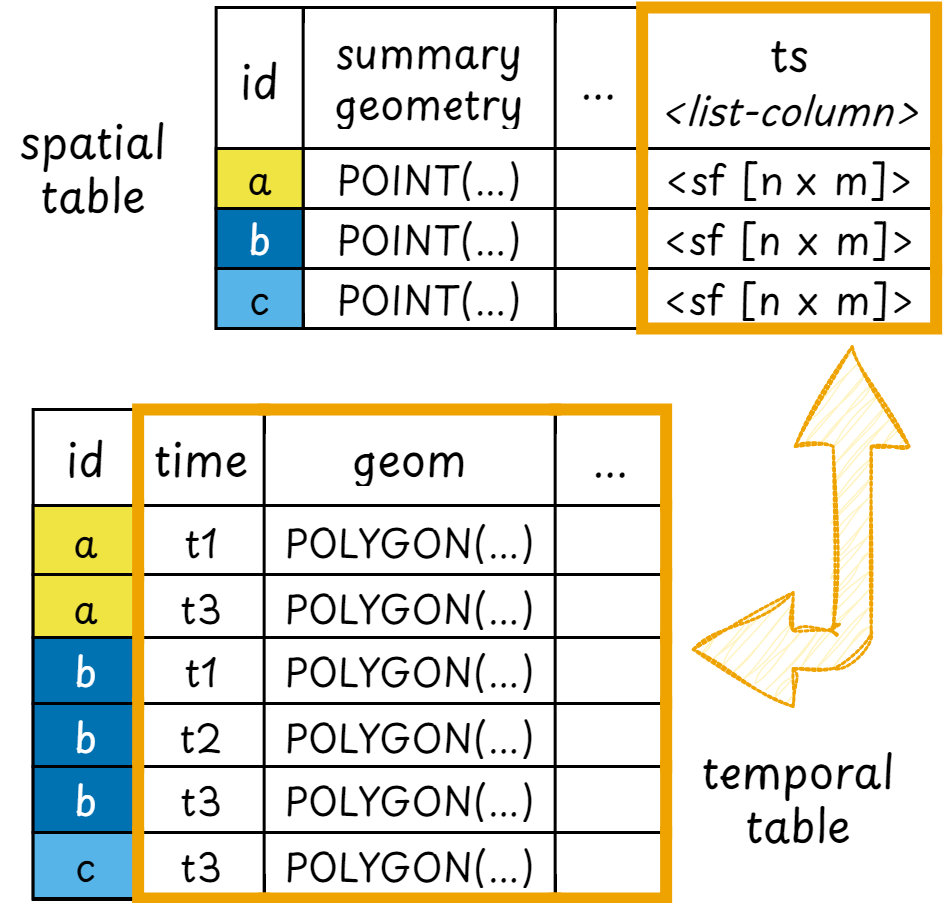
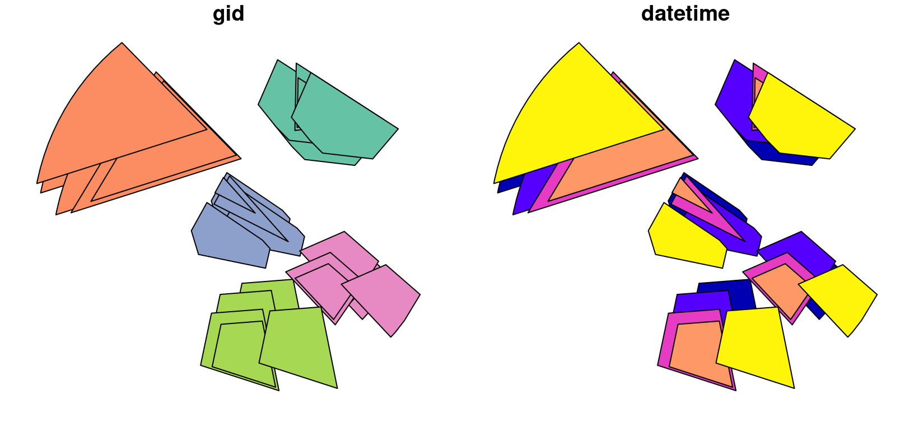

post (POlygon changes in Space and Time) is a package designed to provide array and tabular vector data cube structures to organise and analyse polygons that change their shape in space and time.
post takes two existing packages that support vector data cubes: stars for array vector data cubes and cubble for tabular vector data cubes. It extends their functionality to support changing geometries and to perform spatio-temporal analyses of vector data.
Particularly, post was created to analyse the evolution of geomorphological features such as landslides, lava flows, and glaciers, which change their geometry over time. However, it can be used to analyse other types of moving and/or changing geometries, for example, urban sprawl.
Vector data cubes
Data cubes are multi-dimensional data structures. The most commonly known data cubes, particularly in Earth observation (EO), are raster data cubes. Raster data cubes are structures frequently used to organise time series of satellite imagery, gridded climate data, etc. They have minimum two spatial dimensions: longitude or x and latitude or y. The remainder dimensions can either be time, or other dimension such as bands for EO data.


On the other hand, vector data cubes support one minimum spatial dimension, a geometry. Representing data in vector data cubes becomes useful when thematic variables are changing over time at the vector locations, i.e. for spatio-temporal data. For example, time series of temperature, precipitation, wind speed, etc. recorded by climate stations can be represented and analysed using vector data cubes. However, current implementations of vector data cubes only support static geometries (e.g. climate stations stay at the same place over time). post intends to provide support also for geometries that change over time.
Post classes
In R, vector data cube structures are supported in the form of array objects by the stars package and as tabular objects1 with the cubble package. sf is used both by cubble and stars to handle the spatial dimensions. Finally, both stars and cubble support certain tidyverse functions.
post combines the advantages of all these packages to support vector data cubes to structure and analyse polygon geometry time series. For this, two classes are provided: post_array and post_table.


post_array class
post_table classpost_array inherits the stars class and therefore supports most of stars methods, including the print method.
methods(class = "post_array")
#> [1] [ as_post_array as_post_table filter mutate
#> [6] rename select slice st_as_sf transmute
#> see '?methods' for accessing help and source codepost_table inherits the cubble class and its subclasses spatial_cubble_df and temporal_cubble_df. Likewise, it supports most of the cubble methods and retains the cubble print methods.
methods(class = "post_table")
#> [1] arrange as_post_array as_post_table dplyr_reconstruct
#> [5] face_spatial face_temporal filter mutate
#> [9] rename select slice spatial
#> [13] st_as_sf st_crs<- st_normalize st_shift_longitude
#> [17] st_transform st_wrap_dateline st_zm unfold
#> see '?methods' for accessing help and source codeCreation and structure
To showcase the data structure of post objects a dummy dataset is provided with the package (?polygons).
polygons
#> Simple feature collection with 25 features and 2 fields
#> Geometry type: POLYGON
#> Dimension: XY
#> Bounding box: xmin: -0.2974337 ymin: -0.00297557 xmax: 0.9730806 ymax: 1.153558
#> Geodetic CRS: WGS 84
#> First 10 features:
#> gid datetime geometry
#> 1 a 2020-10-01 POLYGON ((0.5474949 0.80889...
#> 2 b 2020-10-01 POLYGON ((0.2791708 0.83373...
#> 3 c 2020-10-01 POLYGON ((0.2807462 0.62779...
#> 4 d 2020-10-01 POLYGON ((0.7650701 0.47444...
#> 5 e 2020-10-01 POLYGON ((0.3825692 0.35378...
#> 6 a 2020-10-02 POLYGON ((0.4961102 0.87283...
#> 7 b 2020-10-02 POLYGON ((0.3298312 0.76120...
#> 8 c 2020-10-02 POLYGON ((0.328914 0.568743...
#> 9 d 2020-10-02 POLYGON ((0.7217233 0.52617...
#> 10 e 2020-10-02 POLYGON ((0.3101455 0.31689...The data has 5 objects with a unique group identifier that changes their shape for different timestamps.
plot(polygons)
To create a post object a group identifier (group_id) is always required2. This identifier should be unique per feature and within each group there should not exist duplicated timestamps.
Minimally, an sf object that is converted to a post object should have the following columns:
- a group identifier
- a timestamp
- changing geometries
When converting an sf object to a post object, the necessary arguments are automatically identified if not supplied.
post_array objects
post_array is a spatio-temporal array data structure that organises polygons that change their shape in space and time. It extends the stars class for vector data cubes to support changing geometries as attributes. The post_array class supports two dimensions: a summary geometry dimension (default name: geom_sum) and a temporal dimension. The summary geometry is a unique geometry per group which summarises the changing shapes of the polygon geometries in the group. To learn more about the data structure of post_array objects see vignette("stars4", package = "stars").
Each array “cell” should have a value. In case a particular summary geometry - temporal dimension combination does not exist, the changing geometry is stored as an empty geometry. This behavior guarantees the dimensionality of the post_array object.
(arr = as_post_array(polygons))
#> stars object with 2 dimensions and 1 attribute
#> attribute(s):
#> geometry
#> POLYGON :25
#> epsg:4326 : 0
#> +proj=long...: 0
#> dimension(s):
#> from to offset delta refsys point
#> geom_sum 1 5 NA NA WGS 84 TRUE
#> datetime 1 5 2020-10-01 1 days Date FALSE
#> values
#> geom_sum POINT (0.647816 0.9018588),...,POINT (0.4690683 0.17772)
#> datetime NULL
class(arr)
#> [1] "post_array" "stars"To extract the summary and changing geometries from post_array objects use:
# changing geometry
arr$geometry
#> Geometry set for 25 features [dim: 5 x 5]
#> Geometry type: POLYGON
#> Dimension: XY
#> Bounding box: xmin: -0.2974337 ymin: -0.00297557 xmax: 0.9730806 ymax: 1.153558
#> Geodetic CRS: WGS 84
#> First 5 geometries:
#> POLYGON ((0.5474949 0.8088912, 0.4874872 0.8838...
#> POLYGON ((0.2791708 0.8337388, -0.2847997 0.654...
#> POLYGON ((0.2807462 0.6277986, 0.3325024 0.7215...
#> POLYGON ((0.7650701 0.4744459, 0.8787185 0.3753...
#> POLYGON ((0.3825692 0.3537803, 0.5519791 0.3669...
# summary geometry
st_geometry(arr)
#> Geometry set for 5 features
#> Geometry type: POINT
#> Dimension: XY
#> Bounding box: xmin: -0.002543201 ymin: 0.17772 xmax: 0.752585 ymax: 0.9018588
#> Geodetic CRS: WGS 84
#> POINT (0.647816 0.9018588)
#> POINT (-0.002543201 0.8403816)
#> POINT (0.3897167 0.5412363)
#> POINT (0.752585 0.3538271)
#> POINT (0.4690683 0.17772)The array format does not include the group identifiers in their data structure directly, since they are represented by the summary geometry. However, these identifiers are stored as metadata and can be obtained as:
get_group_ids(arr)
#> gid
#> 1 a
#> 2 b
#> 3 c
#> 4 d
#> 5 e
post_table objects
post_table is a spatio-temporal tabular data structure that organises polygons that change their shape in space and time. It extends the cubble_df classes for vector data cubes to support changing geometries in the temporal face of the cube. The post_table geometry for the spatial face of the cube defaults to a column named geom_sum, while the changing geometry provided is passed on to the temporal face of the cube. To learn more about the data structure of post_table objects see vignette("cb1class", package = "cubble").
Contrary to post_array objects, post_table can handle gaps in its data, i.e., not every summary geometry - temporal combination should be present.
(tab = as_post_table(polygons))
#> # cubble: key: gid [5], index: datetime, nested form, [sf]
#> # spatial: [0, 0.18, 0.75, 0.9], WGS 84
#> # temporal: datetime [date], geometry [POLYGON [°]]
#> gid long lat geom_sum ts
#> * <chr> <dbl> <dbl> <POINT [°]> <list>
#> 1 a 0.648 0.902 (0.647816 0.9018588) <sf [5 × 2]>
#> 2 b -0.00254 0.840 (-0.002543201 0.8403816) <sf [5 × 2]>
#> 3 c 0.390 0.541 (0.3897167 0.5412363) <sf [5 × 2]>
#> 4 d 0.753 0.354 (0.752585 0.3538271) <sf [5 × 2]>
#> 5 e 0.469 0.178 (0.4690683 0.17772) <sf [5 × 2]>
class(tab)
#> [1] "post_table" "spatial_cubble_df" "cubble_df"
#> [4] "sf" "tbl_df" "tbl"
#> [7] "data.frame"
(tab_temp = face_temporal(tab))
#> # cubble: key: gid [5], index: datetime, long form
#> # temporal: 2020-10-01 -- 2020-10-05 [1D], no gaps
#> # spatial: long [dbl], lat [dbl], geom_sum [POINT [°]]
#> gid datetime geometry
#> * <chr> <date> <POLYGON [°]>
#> 1 a 2020-10-01 ((0.5474949 0.8088912, 0.4874872 0.8838477, 0.5520055 1.032…
#> 2 a 2020-10-02 ((0.4961102 0.8728385, 0.4361026 0.947795, 0.5006209 1.0966…
#> 3 a 2020-10-03 ((0.5578801 0.8616378, 0.5623908 1.085448, 0.8520717 0.8981…
#> 4 a 2020-10-04 ((0.5652241 0.872057, 0.5685463 1.036898, 0.7819022 0.89897…
#> 5 a 2020-10-05 ((0.6063791 0.8304178, 0.5463715 0.9053744, 0.6108898 1.054…
#> 6 b 2020-10-01 ((0.2791708 0.8337388, -0.2847997 0.6540191, -0.2825181 0.6…
#> 7 b 2020-10-02 ((0.3298312 0.7612067, -0.2341393 0.5814869, -0.2318577 0.5…
#> 8 b 2020-10-03 ((0.3796448 0.767853, -0.1843257 0.5881332, 0.09777458 1.05…
#> 9 b 2020-10-04 ((0.3642467 0.779727, -0.1182199 0.6259799, 0.1231118 1.026…
#> 10 b 2020-10-05 ((0.2665368 0.8649996, -0.2974337 0.6852798, -0.2951521 0.6…
#> # ℹ 15 more rows
class(tab_temp)
#> [1] "post_table" "temporal_cubble_df" "cubble_df"
#> [4] "sf" "tbl_df" "tbl"
#> [7] "data.frame"To extract the summary and changing geometries from post_table objects use:
# changing geometry
st_geometry(tab)
#> Geometry set for 5 features
#> Geometry type: POINT
#> Dimension: XY
#> Bounding box: xmin: -0.002543201 ymin: 0.17772 xmax: 0.752585 ymax: 0.9018588
#> Geodetic CRS: WGS 84
#> POINT (0.647816 0.9018588)
#> POINT (-0.002543201 0.8403816)
#> POINT (0.3897167 0.5412363)
#> POINT (0.752585 0.3538271)
#> POINT (0.4690683 0.17772)
# summary geometry
st_geometry(tab_temp)
#> Geometry set for 25 features
#> Geometry type: POLYGON
#> Dimension: XY
#> Bounding box: xmin: -0.2974337 ymin: -0.00297557 xmax: 0.9730806 ymax: 1.153558
#> Geodetic CRS: WGS 84
#> First 5 geometries:
#> POLYGON ((0.5474949 0.8088912, 0.4874872 0.8838...
#> POLYGON ((0.4961102 0.8728385, 0.4361026 0.9477...
#> POLYGON ((0.5578801 0.8616378, 0.5623908 1.0854...
#> POLYGON ((0.5652241 0.872057, 0.5685463 1.03689...
#> POLYGON ((0.6063791 0.8304178, 0.5463715 0.9053...Conversion between post_* objects
The functions as_post_*() can be used to convert objects between from post_table to post_array and viceversa. This is particularly useful when certain methods and operations are only available for one class.
tab |> as_post_array()
#> stars object with 2 dimensions and 1 attribute
#> attribute(s):
#> geometry
#> POLYGON :25
#> epsg:4326 : 0
#> +proj=long...: 0
#> dimension(s):
#> from to offset delta refsys point
#> geom_sum 1 5 NA NA WGS 84 TRUE
#> datetime 1 5 2020-10-01 1 days Date FALSE
#> values
#> geom_sum POINT (0.647816 0.9018588),...,POINT (0.4690683 0.17772)
#> datetime NULL
arr |> as_post_table()
#> # cubble: key: gid [5], index: datetime, nested form, [sf]
#> # spatial: [0, 0.18, 0.75, 0.9], WGS 84
#> # temporal: datetime [date], geometry [POLYGON [°]]
#> gid long lat geom_sum ts
#> * <chr> <dbl> <dbl> <POINT [°]> <list>
#> 1 a 0.648 0.902 (0.647816 0.9018588) <sf [5 × 2]>
#> 2 b -0.00254 0.840 (-0.002543201 0.8403816) <sf [5 × 2]>
#> 3 c 0.390 0.541 (0.3897167 0.5412363) <sf [5 × 2]>
#> 4 d 0.753 0.354 (0.752585 0.3538271) <sf [5 × 2]>
#> 5 e 0.469 0.178 (0.4690683 0.17772) <sf [5 × 2]>For a conversion from post_array to post_table the argument drop_empty is available in case the post_array object has empty geometries. Dropping empty geometries is the default.
set.seed(732)
(arr_empty = polygons[sample(nrow(polygons), 13), ] |>
as_post_array())
#> stars object with 2 dimensions and 1 attribute
#> attribute(s):
#> geometry
#> POLYGON :25
#> epsg:4326 : 0
#> +proj=long...: 0
#> dimension(s):
#> from to offset delta refsys point
#> geom_sum 1 5 NA NA WGS 84 TRUE
#> datetime 1 5 2020-10-01 1 days Date FALSE
#> values
#> geom_sum POINT (0.648836 0.8727337),...,POINT (0.4738249 0.1737262)
#> datetime NULL
arr_empty$geometry
#> Geometry set for 25 features (with 12 geometries empty) [dim: 5 x 5]
#> Geometry type: POLYGON
#> Dimension: XY
#> Bounding box: xmin: -0.2847997 ymin: -0.00297557 xmax: 0.8416864 ymax: 1.122298
#> Geodetic CRS: WGS 84
#> First 5 geometries:
#> POLYGON ((0.5474949 0.8088912, 0.4874872 0.8838...
#> POLYGON ((0.2791708 0.8337388, -0.2847997 0.654...
#> POLYGON EMPTY
#> POLYGON EMPTY
#> POLYGON ((0.3825692 0.3537803, 0.5519791 0.3669...
# converting to post_table
as_post_table(arr_empty) |>
face_temporal()
#> # cubble: key: gid [5], index: datetime, long form
#> # temporal: 2020-10-01 -- 2020-10-05 [1D], has gaps!
#> # spatial: long [dbl], lat [dbl], geom_sum [POINT [°]]
#> gid datetime geometry
#> * <chr> <date> <POLYGON [°]>
#> 1 a 2020-10-01 ((0.5474949 0.8088912, 0.4874872 0.8838477, 0.5520055 1.032…
#> 2 a 2020-10-04 ((0.5652241 0.872057, 0.5685463 1.036898, 0.7819022 0.89897…
#> 3 b 2020-10-01 ((0.2791708 0.8337388, -0.2847997 0.6540191, -0.2825181 0.6…
#> 4 b 2020-10-02 ((0.3298312 0.7612067, -0.2341393 0.5814869, -0.2318577 0.5…
#> 5 b 2020-10-03 ((0.3796448 0.767853, -0.1843257 0.5881332, 0.09777458 1.05…
#> 6 c 2020-10-02 ((0.328914 0.5687438, 0.3806701 0.6624509, 0.5646669 0.5374…
#> 7 c 2020-10-03 ((0.2897647 0.6168588, 0.3415208 0.710566, 0.5357965 0.4922…
#> 8 c 2020-10-04 ((0.2930046 0.6546896, 0.3210764 0.7055149, 0.4264484 0.587…
#> 9 c 2020-10-05 ((0.2145846 0.5285578, 0.2663408 0.6222649, 0.4503375 0.497…
#> 10 d 2020-10-02 ((0.7217233 0.5261787, 0.8353717 0.4270488, 0.7832953 0.340…
#> 11 e 2020-10-01 ((0.3825692 0.3537803, 0.5519791 0.3669884, 0.6063218 0.096…
#> 12 e 2020-10-03 ((0.2813385 0.2544898, 0.4507484 0.2676979, 0.505091 -0.002…
#> 13 e 2020-10-05 ((0.4750757 0.2620892, 0.6444856 0.2752973, 0.6988282 0.004…
as_post_table(arr_empty, drop_empty = FALSE) |>
face_temporal()
#> # cubble: key: gid [5], index: datetime, long form
#> # temporal: 2020-10-01 -- 2020-10-05 [1D], no gaps
#> # spatial: long [dbl], lat [dbl], geom_sum [POINT [°]]
#> gid datetime geometry
#> * <chr> <date> <POLYGON [°]>
#> 1 a 2020-10-01 ((0.5474949 0.8088912, 0.4874872 0.8838477, 0.5520055 1.032…
#> 2 a 2020-10-02 EMPTY
#> 3 a 2020-10-03 EMPTY
#> 4 a 2020-10-04 ((0.5652241 0.872057, 0.5685463 1.036898, 0.7819022 0.89897…
#> 5 a 2020-10-05 EMPTY
#> 6 b 2020-10-01 ((0.2791708 0.8337388, -0.2847997 0.6540191, -0.2825181 0.6…
#> 7 b 2020-10-02 ((0.3298312 0.7612067, -0.2341393 0.5814869, -0.2318577 0.5…
#> 8 b 2020-10-03 ((0.3796448 0.767853, -0.1843257 0.5881332, 0.09777458 1.05…
#> 9 b 2020-10-04 EMPTY
#> 10 b 2020-10-05 EMPTY
#> # ℹ 15 more rows